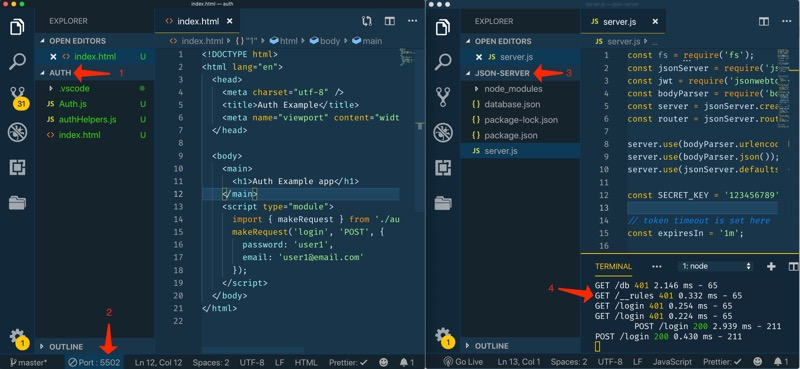

Web Mobile App Development
CIT 261
Ponder Team Activity: Authentication with JWT
Overview
This week we will dive into one method of authenticating front end applications using JSON Web Tokens. The activity will also ask you to do a bit of form validation. It may be helpful to review the readings from last week before you attempt this activity.
Instructions
Complete the following assignment as a team. Designate one team member as the "main driver" and collaborate on their copy of the code. Everyone on the team should be actively engaged in writing the code and contributing to the solution. Once the solution is working, make sure that everyone on the team gets a copy of the code. Each week let someone else be the "main driver" of the coding.
Core Requirements
-
Setup
We need a few things to successfully complete this activity. The most important thing is a backend server to respond to our authentication requests. Create a folder on your computer called week11. Download this node server boilerplate. Expand it into your week11 folder, then open the folder in your editor. We need to install the dependencies for this application before we can use it, so you need to open a command line prompt and change to the folder that contains the server code you downloaded (should be called json-server). Then type:
npm installOnce that finishes you can type:
npm run start-authThis will start up our authentication server. It will be listening at http://127.0.0.1:3000/ (Note this is a local address and can only be accessed from the computer running the server).
If none of the instructions above look familiar...go and complete the modern workflow activity from week09.
You should leave this server running until you are done with the activity. ctrl-c will terminate the program when you are ready.
We are also going to be making many AJAX calls for this activity. Some will get simple GETs, but we will also need to do our first POST as well to send the login information to our authentication server. We also want to pay close attention to handling errors. Begin this activity by creating a function we can use to make these requests. It will be similar to the
getJSONmethod we created last week, but it needs to do more.If you review that function it looked like this:
function getJSON(url) { return fetch(url) .then(function(response) { if (!response.ok) { throw Error(response.statusText); } else { return response.json(); } }) .catch(function(error) { console.log(error); }); }We can use this as a starting point, but our new function needs to allow for different verbs (GET, or POST), and the addition of the data we might need to send. We can use this as a model for our new function:
// Server Address const baseURL = 'http://127.0.0.1:3000/'; // helper function to make an http request with fetch. // returns a json object async function makeRequest(url, method = 'GET', body = null) { // we will need to set some custom options for our fetch call let options = { method: method, headers: { 'Content-Type': 'application/json' } }; // if we are sending any data with the request add it here if (method == 'POST' || method == 'PUT') { options.body = JSON.stringify(body); } const response = await fetch(baseURL + url, options); // in this case we are processing the response as JSON before we check the status. The API we are using will send back more meaningful error messages than the default messages in the response, but we have to convert it before we can get to them. const data = await response.json(); if (!response.ok) { // server will send a 500 server error if the token expires...or a 401 if we are not authorized, ie bad username/password combination, and a 404 if the URL we requested does not exist. All of these would cause response.ok to be false console.log(response); throw new Error(`${data.status}: ${data.message}`); } else return data; // not catching the error here...so we will need to catch it later on and handle it. }Note a few things:
- We are passing in several things...a url, a method that will be set to GET if nothing else is provided, and a body argument that will sometimes contain the information we need to send to the API, and sometimes will be null.
- We will need to send in a custom options object to fetch. We need to specify method (GET is the default), and then we will need to set some headers. Headers contain information that changes how the server we are communicating to will treat our request. We have set one for now: we tell the server that we are sending/expecting JSON.
- Next we check if the method is either POST or PUT. Both of these methods involve sending data with the request. We add that to the body of our request...making sure to convert it to a string (JSON.stringify).
- This example also uses async/await to process the Promises. The next line actually makes the fetch request, passing in the URL (which we have been doing) and also our options object (which we haven't done before)
- Next we process the response as JSON.
- Now we do some error checking to see if our request worked the way we expected. If it didn't we throw and error, if it did we return the data.
- Notice that we aren't catching the error here...we will need to make sure we do that later.
Create a folder inside of your week11 folder called client to contain the client side files for the project. Create an authHelpers.js file and put our
makeRequestfunction in there...export it. Create also an HTML file called week11.html and add the HTML to make a simple page. Create one more file called week11.js and add it to your html via ascriptelement (We will be using modules so don't forgettype="module"). Import in yourmakeRequestfunction into the week11.js file and test it by trying this:makeRequest('login', 'POST', { password: 'user1', email: 'user1@email.com' });Here is a screenshot of my setup for this activity using VS Code and Live Server. Notice the file structure. The client code I am previewing using the Live Server extention (127.0.0.1:5500), and the server code is being run in the built in command line in VS Code (127.0.0.1:3000). (Type ctrl+~ to bring up the command line in VS Code)
If this were a real application the client and server could be on the same server or different servers, but would most likely have different addresses (instead of just different ports like we have with our development environment). Something like my-app.com for the frontend, and my-api.com for the backend.
If you open the debugger tools and select the "Network" tab in Chrome you should see all of the requests that your browser has made. Some were to load the html, css, and JS resources, but at the bottom you should see one or two requests to login. That was in result of our call with
makeRequest. Click on the last one. You can see the Request and Response headers, and if you select the Response tab you can see what was sent back. You should see an object with an accessToken in it.If the function call above didn't work, verify the following:
-
The server code we setup above is running. (You should have
a terminal window somewhere that has the application running
in it.) Try entering
http://127.0.0.1:3000/login into a browser. If it
is working you should see
{ "status": 401, "message": "Error in authorization format" } - You are accessing your index.html file through a webserver. If you are using Brackets or VS Code with the Live Server extention you are. When looking at your html file in the browser check the address. It should start with either 127.0.0.1 or localhost.
The only thing this server will allow us to do without a token is login. For everything else we will need to provide the token with our request. The most common way to do this is with an Authorization header. In the makeRequest function provided above you can see an example of setting a custom header on a request. In that case we set
'Content-Type': 'application/json'. We can do something similar with our authorization header. Before we add the header though we need to make sure that a token as passed into the function. Let's test for the token after we check for a POST or PUT request. Add these lines there.// if a token was passed in we should send it on. if (token) { options.headers.Authorization = `Bearer ${token}`; }You will also need to modify the function declaration to add token=null as a potential argument. (
async function makeRequest(url, method = 'GET', body = null, token = null))That's it...now we can send a token with any request.
-
Login Form and Auth module.
Add a Login form to your index.html. You will need a two inputs: one for the email (username) and one for password. Don't forget to add a submit button as well. Create an auth.js file, add a class to it called
Authand export it.To help you get your authentication working you can start with this code:
//Auth class which provides basic JWT based authentication for our app. // Requires: access to the makeRequest functions import { makeRequest } from './authHelpers.js'; export default class Auth { constructor() { this.jwtToken = ''; this.user = {}; } async login(callback) { // replace the ids below with whatever you used in your form. const password = document.getElementById('password'); const username = document.getElementById('username'); const postData = { email: username.value, password: password.value }; try { // 1. use the makeRequest function to pass our credentials to the server // 2. if we get a successful response...we have a token! Store it since we will need to send it with every request to the API. // let's get the user details as well and store them locally in the class // you can pass a query to the API by appending it on the end of the url like this: 'users?email=' + email this.user = await this.getCurrentUser(username.value); // hide the login form. document.getElementById('login').classList.add('hidden'); // clear the password password.value = ''; // since we have a token let's go grab some data from the API by executing the callback if one was passed in if(callback) { callback(); } } catch (error) { // if there were any errors display them console.log(error); } } // uses the email of the currently logged in user to pull up the full user details for that user from the database async getCurrentUser(email) { try { // 3. add the code here to make a request for the user identified by email...don't forget to send the token! } catch (error) { // if there were any errors display them console.log(error); } } set token(value) { // we need this for the getter to work...but we don't want to allow setting the token through this. } get token() { return this.jwtToken; } } // end auth classAdd the code above to your Auth module. Then import your module into your HTML file. Create an instance of your Auth class and try calling the login method. If you look in the console of the browser you should see a 401 error. Since we did not pass in a correct username and password that makes sense.
Attach a listener to the submit button on your login form that will call the
loginmethod from our Auth class when pressed. Then finish writing the code for theloginmethod.Once you have the login working complete the
getCurrentUsermethod. Remember that you will need to pass the token we recieved from the server with every request except for login or the server will reject the request. -
Show Posts
After logging in it would be nice to show the user something. Create a function to pull all of the posts from the API and call it after a successful login. (API endpoint would be
baseUrl + 'posts'). To have your function called automatically after login you can pass the function into theloginmethod. It will accept a callback function that will be executed if things go well if you used the code sample above.
Stretch Goals
-
Add a Post
Add a form above or below the list of posts you returned to allow for the creation of a new post. Write the functions you would need to successfully make the call to the API to save the post. (You would need to make a
postrequest with the data for the post tobaseUrl + 'posts') -
Error Handling
Giving good feedback to your users about what is going on is very important...especially when something goes wrong. Let's add an Error reporting module to our code to pass messages on to our users. Add the following at the top of your HTML body:
<div id="errors" class="errors hidden"></div>Then create a new class called Errors in your authHelpers.js file. Add the methods to show errors in that div when appropriate, and clear them when it is time.
export class Errors { constructor(errorElementId) { this.errorElement = document.getElementById(errorElementId); } }Create a new instance of your Errors class to use. Pass it into your Auth class in the constructor so that it has access...then use it in the
catchblocks when appropriate.
Instructors Solution
As a part of this team activity, you are expected to look over a solution from the instructor, to compare your approach to that one. One of the questions on the I-Learn submission will ask you to provide insights from this comparison.
Please DO NOT open the solution until you have worked through this activity as a team for the one hour period. At the end of the hour, if you are still struggling with some of the core requirements, you are welcome to view the instructor's solution and use it to help you complete your own code. Even if you use the instructor's code to help you, you are welcome to report that you finished the core requirements, if you code them up yourself.
After working with your team for the one hour activity, click here for the instructor's solution of this project.
Submission
When you have finished this activity, please fill out the assessment in I-Learn. You are welcome to complete any additional parts of this activity by yourself or with others after your meeting before submitting the assessment.